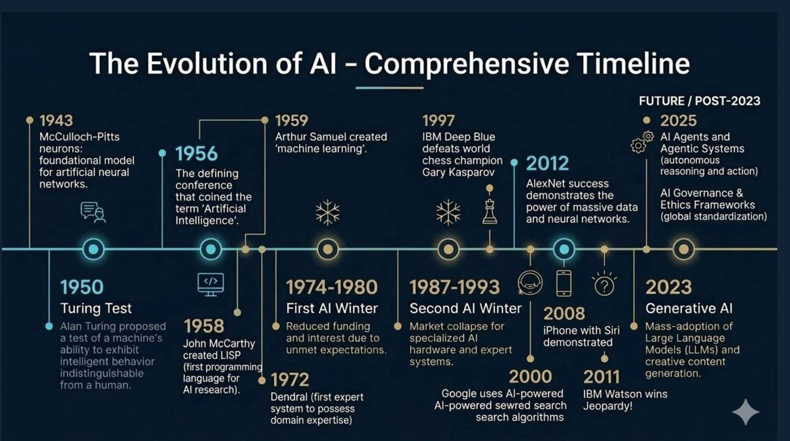

Overview
This artifact presents a structured timeline of AI development. It shows that modern artificial intelligence grew through decades of theory, experimentation, setbacks, and major breakthroughs rather than appearing all at once.
Artifact 02
A visual and analytical project that presents the historical development of artificial intelligence, from foundational theories and early machine intelligence concepts to generative AI, autonomous agents, and future governance frameworks.

This artifact presents a structured timeline of AI development. It shows that modern artificial intelligence grew through decades of theory, experimentation, setbacks, and major breakthroughs rather than appearing all at once.
Key AI events, inventions, setbacks, and future trends
Grouped into eras, milestones, and turning points on one timeline
A fast, visual explanation of how AI evolved over time
1943–1958: neural models, Turing, Dartmouth, and LISP
1972: expert systems such as DENDRAL
1974–1980 and 1987–1993: reduced funding and confidence
1997–2025: Deep Blue, Watson, AlexNet, generative AI, and agents
Early model for artificial neural networks.
The term “Artificial Intelligence” was formally introduced.
Defeated Garry Kasparov and showed practical AI performance.
Demonstrated the power of deep learning with large datasets.
Large language models and creative AI became widely adopted.
Future focus on AI agents, governance, and ethics frameworks.
Main Evidence: Timeline graphic showing AI development from foundational theories to generative AI and future agentic systems.